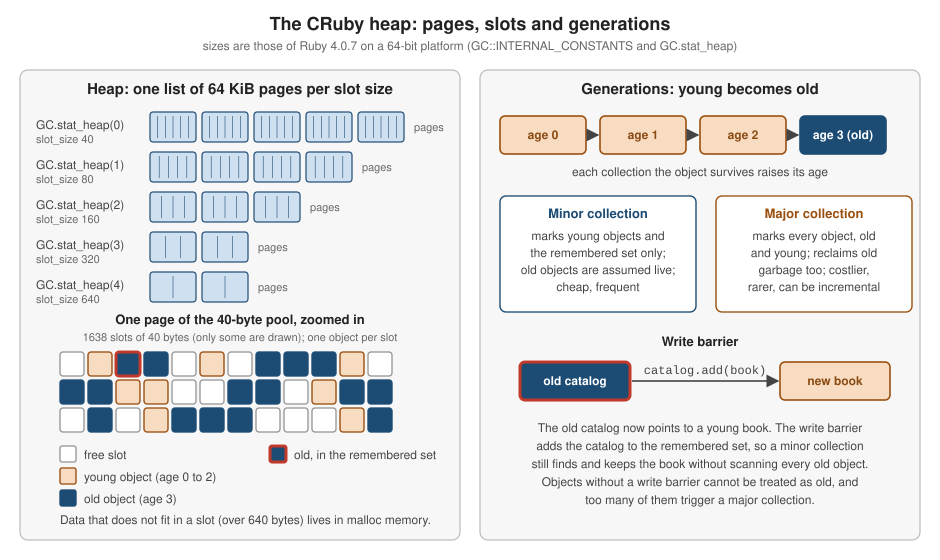

Garbage Collection and Memory
|
This content was generated with the assistance of AI and should be verified against the official documentation before being relied on in production. |
This page is written against Ruby 4.0 (4.0.7, checked on 2026-10-18); features newer than Ruby 3.0 name the version that
introduced them. Ruby programs never free memory explicitly: the garbage collector (GC) finds the objects that can no
longer be reached and reuses their memory. For most programs that is all there is to know, but a long-running service,
a batch job that loads a large catalogue, or a library with a C extension eventually has to answer questions such as how
much memory a structure really costs, why a process keeps growing, or why a request occasionally pauses. This page
explains how the CRuby collector is organised, how to measure what it is doing with GC.stat, GC.latest_gc_info
and ObjectSpace, what the GC module and the RUBY_GC_* environment variables let you change, how heap
compaction and Process.warmup work, what the modular GC of Ruby 3.4 is, and how to find and remove the usual causes
of memory growth.
Everything here describes CRuby, the reference implementation. The GC and ObjectSpace interfaces are marked
implementation-specific in the documentation: other implementations (JRuby, TruffleRuby) use the collectors of their own
runtimes and answer these calls differently or not at all. The page builds on
Object Lifecycle, Freezing and Copying,
which covers finalizers, ObjectSpace::WeakMap, ObjectSpace::WeakKeyMap and WeakRef from the point of view of a
single object. Measuring time rather than memory, and the profilers that attribute allocations to code, are in
Performance, Benchmarking and Profiling;
the JIT compilers (which have a code collector of their own) are in
YJIT, ZJIT and the VM; writing C code that cooperates with the
collector (marking, pinning and write barriers) is in
C Extensions, FFI and WebAssembly. Threads and
Ractors, which the collector has to stop while it works, are in
Threads and the GVL and
Ractors. The environment variables and command-line switches are in
Ruby Command Line and Environment, and the
traps that cause memory growth are repeated in
Common Mistakes and Gotchas. Languages that make other
choices are the Rust reference (ownership instead of a collector) and the
Go reference (a concurrent collector with almost no knobs).
Every example was syntax-checked with ruby -wc, run with ruby -w on Ruby 4.0.7 and linted with RuboCop 1.92 using
the configuration of the running shelf gem (double-quoted strings, NewCops: enable, Style/Documentation off). The
examples use the shelf gem (a small library catalogue, see
the shelf gem source) and are run with ruby -Ilib. The output shown is
the real output of one run, but memory and collector numbers differ from run to run, from machine to machine and
from release to release: page counts, slot counts, timings, address-dependent values and even the number of
collections that a program triggers are illustrative. The examples therefore draw conclusions from differences and
from comparisons, never from absolute values.
How CRuby manages memory
An object lives in a slot: a fixed-size cell on a heap page. When the program creates an object, the allocator takes
a free slot from a page; when no slot is free, or when memory obtained through malloc grows past a limit, the
collector runs. CRuby uses a tracing collector, described in the GC documentation as a mark-and-sweep mechanism: it
starts from the roots (global variables, constants, the VM stacks of every thread and Fiber, and the machine stack),
marks every object it can reach, and sweeps the pages to turn the unmarked slots back into free slots. Sweeping is
lazy by default: a page is swept when the allocator needs its slots, and GC.start(immediate_sweep: false) leaves
sweeping unfinished on purpose. Around that core, CRuby adds several refinements that matter when you read GC.stat:

The refinements, and the release that introduced each (all from the release notes linked in the references):
| Feature | Since | What it does |
|---|---|---|
Generational collection (RGenGC) |
2.1 |
Objects that survive several collections are old and are skipped by cheap minor collections; a full major collection marks everything. |
Incremental marking |
2.2 |
Marking a major collection can be split into small steps interleaved with the program, shortening pauses. |
Garbage-collectable symbols |
2.2 |
Symbols created with |
|
2.7 |
Moves live objects together so fewer pages are needed and the heap is friendlier to copy-on-write after |
|
3.0 |
Compacts during major collections; off by default, and the 3.0 release notes warn to test first because it adds overhead. |
Variable Width Allocation (VWA) |
3.2 on by default |
Objects of different sizes are placed in slots of the fitting size class, with their payload embedded in the slot when it fits. |
|
3.1 |
Measure the time spent in the collector. |
|
3.3 |
Prepare a freshly booted application for a long life; a weak-keyed map with equality semantics. |
Gentler promotion and more write barriers |
3.3 |
Young objects referenced by old objects are no longer promoted at once; many core classes ( |
|
3.4 |
A configuration hash ( |
Independent size-pool growth |
4.0 |
Heaps of different slot sizes grow independently, and the |
The rest of the page takes the pieces in this order: the heap layout, measuring, generations, controlling the
collector, compaction, tuning, the modular GC, ObjectSpace, weak references and finally the practical business of
reducing memory use.
The heap: pages, slots and size pools
A heap page is 64 KiB. The standard slot size is 40 bytes on a 64-bit platform, and since Variable Width Allocation
there are five size pools whose slots are 40, 80, 160, 320 and 640 bytes. A new object goes to the smallest pool whose
slots can hold it together with the payload it can embed. What does not fit (a long string, a large array, a hash table,
the data of a C extension) is allocated with malloc outside the heap and referenced from the slot.
ObjectSpace.memsize_of (library objspace) returns the slot size plus that external memory.
# frozen_string_literal: true
require "objspace"
consts = GC::INTERNAL_CONSTANTS
puts "page size: #{consts[:HEAP_PAGE_SIZE]} bytes, slots per 40-byte page: #{consts[:HEAP_PAGE_OBJ_LIMIT]}"
puts "slot sizes: #{GC.stat_heap.map { |_id, heap| heap[:slot_size] }.inspect}"
samples = {
"empty string" => +"",
"23-byte string" => +"a" * 23,
"100-byte string" => +"a" * 100,
"1000-byte string" => +"a" * 1000,
"empty array" => [],
"10-element array" => Array.new(10, 0),
"100-element array" => Array.new(100, 0),
"empty hash" => {},
"20-entry hash" => (1..20).to_h { |i| [i, i] }
}
samples.each do |label, object|
puts format("%-18<label>s memsize_of: %<size>5d bytes", label:, size: ObjectSpace.memsize_of(object))
endpage size: 65536 bytes, slots per 40-byte page: 1638
slot sizes: [40, 80, 160, 320, 640]
empty string memsize_of: 40 bytes
23-byte string memsize_of: 80 bytes
100-byte string memsize_of: 160 bytes
1000-byte string memsize_of: 1041 bytes
empty array memsize_of: 40 bytes
10-element array memsize_of: 160 bytes
100-element array memsize_of: 840 bytes
empty hash memsize_of: 160 bytes
20-entry hash memsize_of: 992 bytesSource: ObjectSpace.memsize_of and GC.stat_heap
Things to take from the example:
-
GC::INTERNAL_CONSTANTSandGC::OPTSare CRuby details that describe the build (HEAP_PAGE_SIZE,BASE_SLOT_SIZE,HEAP_COUNTand so on). They are not part of the documented interface and exist for tools and for curiosity. -
The size of an object is not the size of its content. An empty string and an empty array take one 40-byte slot, a string of 100 bytes takes a 160-byte slot, and the 1000-byte string needs a slot plus an external buffer of roughly a kilobyte. An empty hash is reported as 160 bytes in this build.
-
memsize_ofis, in the words of its documentation, only a hint: it is incomplete, and the size of objects backed by C data (T_DATA) may be wrong. It reports the memory of one object, not of the objects it refers to, so the figure for a catalogue is the figure of its array, not of the books inside it.ObjectSpace.memsize_of_all(klass)adds up the instances of a class, and its documentation states that it does not return the totalmalloc-ed memory. -
Since the heap is built from pages, memory is obtained from the operating system in page-sized steps and, as shown in Why the process does not shrink, not necessarily handed back when objects die.
Observing the collector
GC.count is the number of collections since the process started. GC.stat returns a hash of counters, GC.stat(key)
returns one value (without building the hash, which matters when the measurement itself should not allocate), and
GC.stat(hash) fills a hash you pass in. The entries the documentation describes are:
| Key | Meaning |
|---|---|
|
Collections so far (minor and major together) and the milliseconds spent in them. |
|
Collections by kind, and compactions. |
|
Pages the heap owns, pages with no live object (which could be released), and pages with at least one live slot. |
|
All slots, slots holding live objects, free slots, and slots whose finalizers are still pending. |
|
Objects marked by the last collection. |
|
Cumulative counts since the process started; their difference is the number of live objects. |
|
Cumulative page counts. |
|
External memory allocated since the last collection, and the limit at which it triggers one. |
|
The same measure for old objects; crossing it triggers a major collection. |
|
Live old objects (those that survived at least three collections) and the count at which a major collection is triggered. |
|
Objects without write barriers and the count that triggers a major collection. |
|
Objects moved by compaction and the number of times the read barrier fired during it. |
The documentation also warns that the entries are implementation-specific and "may change in the future without
notice"; the set of keys in 4.0.7 differs from the sample in the reference (the descriptions still list
heap_allocatable_pages and heap_sorted_length, while 4.0.7 returns heap_allocatable_slots instead). Print GC.stat.keys before depending on a name. GC.stat_heap gives the per-size-pool view
(slot_size, heap_eden_pages, heap_eden_slots, total_allocated_objects and so on, with
force_major_gc_count counting the major collections that one pool forced by running out of slots), and
GC.latest_gc_info describes the most recent collection: why it ran (gc_by: :newobj, :malloc, :method,
:stress), whether it was major and why (major_by), whether a major one is already pending (need_major_by), whether
sweeping was immediate, the current state (:none, :marking, :sweeping) and the weak-reference counters.
# frozen_string_literal: true
require "shelf"
def isbn_for(number)
body = format("978%09d", number)
sum = body.chars.each_with_index.sum { |digit, i| i.even? ? digit.to_i : digit.to_i * 3 }
Shelf::Isbn.new(body + ((10 - (sum % 10)) % 10).to_s)
end
author = Shelf::Author.new("Ada Lovelace")
catalog = Shelf::Catalog.new
before = GC.stat
started = Process.clock_gettime(Process::CLOCK_MONOTONIC)
5_000.times do |i|
catalog.add(Shelf::Book.new(isbn: isbn_for(i), title: "Book #{i}", author:))
end
elapsed = Process.clock_gettime(Process::CLOCK_MONOTONIC) - started
after = GC.stat
delta = ->(key) { after[key] - before[key] }
puts "books in the catalogue: #{catalog.count}"
puts "objects allocated: #{delta.call(:total_allocated_objects)}"
puts "objects freed: #{delta.call(:total_freed_objects)}"
puts "minor collections: #{delta.call(:minor_gc_count)}"
puts "major collections: #{delta.call(:major_gc_count)}"
puts "live slots now: #{after[:heap_live_slots]} of #{after[:heap_available_slots]}"
puts "took #{(elapsed * 1000).round} ms"books in the catalogue: 5000
objects allocated: 370027
objects freed: 334827
minor collections: 32
major collections: 4
live slots now: 60702 of 65176
took 27 msSource: GC.stat
The program built 5000 books and the collector ran 36 times while it did so, 32 minor and 4 major; most of the 370,000 objects were short-lived (the ISBN check digit helper allocates strings and arrays for every book) and were freed again, so a book costs far fewer live objects than allocations. Two habits make such numbers useful:
-
Compare a difference of a monotonic counter (
total_allocated_objects,count,time) taken around the code of interest, as the example does. The absolute values depend on everything that ran before. -
Remember that
GC.statreads the counters at that instant: with lazy sweepingheap_live_slotsstill counts dead objects that have not been swept, so for a precise live count runGC.startfirst.
GC.measure_total_time (3.1) controls whether the collector measures its own time; it is on by default, and the
documentation notes that measuring has a cost. GC.total_time returns the accumulated time in nanoseconds, while the
time entry of GC.stat is in milliseconds. A service can export GC.stat(:count), GC.stat(:time) and
GC.stat(:heap_live_slots) to its metrics system to see collector pressure over time.
Generations: minor and major collections
Most objects die young. A minor collection exploits that by marking only the young objects, plus the remembered
set (the old objects that were changed to point at young ones), and assumes that every old object is still alive.
An object becomes old after surviving three collections (the old_objects entry of GC.stat is documented as
objects that "have survived at least 3 garbage collections"). A major collection marks every object and is the only
one that can reclaim old garbage.
To keep minor collections correct the collector needs to know when an old object is made to point at a young one. That
is the write barrier: assignments to instance variables, array and hash elements and so on go through a barrier that
records the old object in the remembered set. Objects of a type that does not implement the barrier are called
write-barrier unprotected (wb_unprotected); they can never be treated as old, which makes minor collections more
expensive, and the remembered_wb_unprotected_objects_limit entry shows the count at which a major collection is
forced. This is why the 3.3 and 4.0 release notes list write barriers added to core classes as a performance
improvement, and why a C extension that stores references without the barrier macros costs the whole process
collector time (see
C Extensions, FFI and WebAssembly).
A major collection is triggered when one of the limits shown in GC.stat is crossed (old_objects_limit,
oldmalloc_increase_bytes_limit, remembered_wb_unprotected_objects_limit), when a heap runs out of free slots
(force_major_gc_count), or when the program calls GC.start. GC.latest_gc_info(:major_by) records the reason and
:need_major_by records a major collection that has been requested but not yet run. ObjectSpace.dump (library
objspace, JSON text) shows the age and flags of one object, which makes the machinery visible:
# frozen_string_literal: true
require "objspace"
require "json"
# The GC bits that ObjectSpace.dump reports for one object.
def gc_flags(object)
JSON.parse(ObjectSpace.dump(object)).fetch("flags").slice("age", "old", "wb_protected")
end
titles = Array.new(3) { |i| "title #{i}" }
puts "allocated: #{gc_flags(titles)}"
3.times do |round|
GC.start(full_mark: false)
puts "after minor ##{round + 1}: #{gc_flags(titles)}"
end
minor = GC.stat(:minor_gc_count)
major = GC.stat(:major_gc_count)
GC.start(full_mark: false)
puts "minor: +#{GC.stat(:minor_gc_count) - minor}, major: +#{GC.stat(:major_gc_count) - major}"
puts "last: #{GC.latest_gc_info.slice(:major_by, :gc_by)}"
GC.start
puts "last: #{GC.latest_gc_info.slice(:major_by, :gc_by)}"allocated: {"age" => 0, "wb_protected" => true}
after minor #1: {"age" => 2, "wb_protected" => true}
after minor #2: {"age" => 3, "old" => true, "wb_protected" => true}
after minor #3: {"age" => 3, "old" => true, "wb_protected" => true}
minor: +1, major: +0
last: {major_by: nil, gc_by: :method}
last: {major_by: :force, gc_by: :method}Source: ObjectSpace.dump and GC.latest_gc_info
The array is created young (age 0), is promoted to old by the second explicit minor collection and then stays old. The
exact age after the first collection depends on how many automatic collections ran in between (here one did, because
building the strings and parsing the JSON allocate), so the progression 0, then 2, then 3 is not something to rely on;
what matters is that a handful of collections turns a surviving object into an old one. GC.start(full_mark: false) is
a minor collection (major_by stays nil), and plain GC.start is a forced major one (major_by: :force).
GC.config (3.4) reads and changes collector settings. The only entry of the default implementation is
rgengc_allow_full_mark. Setting it to false stops the collector from starting major collections on its own, which also
disables promotion to the old generation; the documentation recommends calling Process.warmup before doing it. It is a
setting for processes with a short, bounded life or an external restart policy, not a general tuning knob.
# frozen_string_literal: true
p GC.config
p GC.config(rgengc_allow_full_mark: false) # young-to-old promotion is now off
p GC.config(unknown_key: 1) # unknown keys are ignored
p GC.config(rgengc_allow_full_mark: true) # restore the default
begin
GC.config(implementation: "mmtk")
rescue ArgumentError => e
puts e.message
end{rgengc_allow_full_mark: true, implementation: "default"}
{rgengc_allow_full_mark: false, implementation: "default"}
{rgengc_allow_full_mark: false, implementation: "default"}
{rgengc_allow_full_mark: true, implementation: "default"}
Attempting to set read-only key "Implementation"Source: GC.config
The second p shows the merged configuration after the change, the third shows that an unknown key is silently ignored,
and the read-only implementation entry cannot be changed (the message is shown capitalised exactly as Ruby prints it).
Controlling the collector
GC.start runs a collection even if collection is disabled. Its keyword arguments, documented as implementation- and
version-dependent, select the kind and how much work is deferred:
| Call | Effect |
|---|---|
|
A major collection that finishes marking and sweeping before returning ( |
|
A minor collection: only young objects are marked. |
|
Marking proceeds incrementally, interleaved with the program, and may not be complete when the call returns. |
|
Sweeping is deferred (lazy), and may not be complete when the call returns. |
|
An alias of |
|
Stop and resume automatic collections; each returns whether collection was disabled, so |
|
Collect at every allocation opportunity (an integer selects flags: |
# frozen_string_literal: true
def collections = GC.stat(:count)
puts "GC.disable returns #{GC.disable.inspect} the first time and #{GC.disable.inspect} the second"
before = collections
Array.new(2_000_000) { Object.new }
puts "collections while disabled: #{collections - before}"
puts "GC.start still works: #{GC.start.inspect}, count +#{collections - before}"
puts "GC.enable returns #{GC.enable.inspect} (it was disabled)"
before = collections
GC.start(full_mark: false, immediate_sweep: false)
puts "partial collection: +#{collections - before}, state afterwards: #{GC.latest_gc_info(:state).inspect}"
GC.measure_total_time = true
spent = GC.total_time
GC.start
puts "GC.total_time grew: #{GC.total_time > spent} (nanoseconds); GC.stat[:time] is in milliseconds"
before = collections
GC.stress = true
Array.new(20) { +"x" }
GC.stress = false
puts "collections caused by 20 allocations under GC.stress: #{collections - before}"GC.disable returns false the first time and true the second
collections while disabled: 0
GC.start still works: nil, count +1
GC.enable returns true (it was disabled)
partial collection: +1, state afterwards: :sweeping
GC.total_time grew: true (nanoseconds); GC.stat[:time] is in milliseconds
collections caused by 20 allocations under GC.stress: 26Two million objects were allocated with collection disabled and no collection ran, which is exactly the danger of
GC.disable: the process’s memory grows until someone calls GC.enable or the machine runs out. The partial collection
of the example returns while sweeping is still in progress (state: :sweeping), which is what immediate_sweep: false
asks for. Under GC.stress even 20 small allocations triggered 26 collections; the mode exists to shake out bugs in C
extensions that forget to protect an object from the collector.
Guidelines for calling the collector yourself:
-
Do not call
GC.startin a request path or inside a loop. Automatic collections are driven by the limits above and are almost always better timed than a manual call, which also promotes objects to the old generation. -
Legitimate uses are a test suite that wants a clean slate before measuring, a benchmark that collects before taking a baseline (the examples on this page do that), and a pre-forking server that prepares its master process with
Process.warmupbefore forking workers. -
Wrap
GC.disablearound a short, bounded block of work only, and always re-enable it (ensure). Never disable the collector for the lifetime of a service.
Heap compaction
Long-running processes fragment the heap: after many objects die, free slots are scattered over many pages, and a page
with a single live object cannot be released. Compaction moves live objects next to each other and updates every
reference to them, so that pages become empty and can be given back. GC.compact (2.7) does it on demand, and
GC.auto_compact = true (3.0) compacts during major collections. Neither is described on the 4.0 reference pages for
GC, so the release notes are the place to look (and ri has no entry for them either); the methods are GC.compact, GC.auto_compact,
GC.auto_compact=, GC.latest_compact_info and GC.verify_compaction_references. On 4.0.7 GC.compact returns the
statistics of the compaction as a hash.
# frozen_string_literal: true
require "shelf"
# Allocate many small objects, then drop most of them to leave holes in the heap.
garbage_and_keepers = Array.new(200_000) { |i| Shelf::Author.new("Author #{i}") }
keepers = garbage_and_keepers.each_slice(10).map(&:first)
garbage_and_keepers.clear
GC.start
puts "auto_compact: #{GC.auto_compact}"
puts "before: pages=#{GC.stat(:heap_eden_pages)} live=#{GC.stat(:heap_live_slots)} free=#{GC.stat(:heap_free_slots)}"
stats = GC.compact
puts "after: pages=#{GC.stat(:heap_eden_pages)} live=#{GC.stat(:heap_live_slots)} free=#{GC.stat(:heap_free_slots)}"
puts "compactions: #{GC.stat(:compact_count)}, objects moved: #{GC.stat(:total_moved_objects).positive?}"
puts "compact stats keys: #{stats.keys}"
puts "keepers still valid: #{keepers.size} #{keepers.first}"
# Process.warmup runs a full collection and a compaction, among other things.
puts "Process.warmup: #{Process.warmup.inspect}"auto_compact: false
before: pages=321 live=58710 free=439557
after: pages=53 live=58735 free=9824
compactions: 1, objects moved: true
compact stats keys: [:considered, :moved, :moved_up, :moved_down]
keepers still valid: 20000 #<data Shelf::Author name="Author 0">
Process.warmup: trueTwo hundred thousand authors were created and nine in ten of them dropped, which leaves holes in the heap; after
compaction the same live objects occupy a sixth of the pages (53 instead of 321 here), and the program’s own references
(keepers) still work because moved objects are transparently updated. The page count after GC.compact is not
guaranteed to shrink; it does so here because the program created a large block of garbage first.
What to know before using compaction:
-
Objects can only move if everything that refers to them can be updated. Objects referenced from C code that does not declare the reference as movable stay pinned in place, so extensions need to mark with
rb_gc_mark_movableand read withrb_gc_location; see the C extension page.GC.verify_compaction_references(used by extension authors in their test suites) compacts aggressively to expose references that were not updated. -
Compaction takes time while the program is paused. The 3.0 release notes say it "adds significant overhead to major collections" and ask users to test first, so
GC.auto_compactis off by default and is best left that way unless a measurement shows a benefit. -
The main payoffs are fewer pages (see the next section for whether the memory actually returns to the operating system) and better copy-on-write behaviour in pre-forking servers, because forked workers share pages with the master until they write to them.
Process.warmup (3.3) is the one-call version for the end of application boot. The documentation says that on CRuby
it performs a major collection, compacts the heap, promotes all surviving objects to the old generation, precomputes
the coderange of all strings, frees all empty heap pages and calls malloc_trim where available, and that the actual
optimisations are implementation-specific and may change. In a pre-forking deployment call it once in the original
process before the first fork, not in the workers.
Why the process does not shrink
GC.stat counts slots and pages, but the operating system sees the resident set size (RSS) of the process. The two
diverge, which is the most common surprise when investigating memory.
# frozen_string_literal: true
require "shelf"
def rss_mb = (IO.popen(["ps", "-o", "rss=", "-p", Process.pid.to_s], &:read).to_i / 1024.0).round
def report(label)
stat = GC.stat
puts format("%-24<label>s %4<rss>d MB pages %<pages>5d live slots %<live>8d empty pages %<empty>4d",
label:, rss: rss_mb, pages: stat[:heap_allocated_pages], live: stat[:heap_live_slots],
empty: stat[:heap_empty_pages])
end
def load_books(count)
author = Shelf::Author.new("Ada Lovelace")
isbn = Shelf::Isbn.new("978-0-306-40615-7")
Array.new(count) { |i| Shelf::Book.new(isbn:, title: "Book #{i}", author:) }
end
report("start")
books = load_books(1_000_000)
report("#{books.size} books alive")
books.clear
report("cleared, not collected")
GC.start
report("after GC.start")
GC.compact
report("after GC.compact")start 19 MB pages 36 live slots 25466 empty pages 0
1000000 books alive 133 MB pages 1579 live slots 2185193 empty pages 0
cleared, not collected 133 MB pages 1579 live slots 2185213 empty pages 0
after GC.start 102 MB pages 1079 live slots 18754 empty pages 1042
after GC.compact 102 MB pages 1079 live slots 18778 empty pages 1050Source: GC.stat
(The example reads the RSS from ps, which exists on macOS and Linux.) A million books raised the process from 19 MB to
133 MB. Clearing the array changed nothing until a collection ran; the collection freed about 31 MB and left more than a
thousand empty pages that the heap keeps for reuse, so the process stays near 102 MB although almost nothing is
alive. GC.compact did not release them here either. This is not a leak: the empty pages are reused by the next
allocations, and the figure to watch for a leak is whether the live slot count keeps growing across repeated cycles of
the same work. Process.warmup explicitly frees empty pages (see above), and for services the usual remedies are
restarting workers after a number of requests, and, on Linux with glibc, limiting the number of malloc arenas
(the MALLOC_ARENA_MAX environment variable) or using an alternative allocator such as jemalloc. Those two are general
malloc behaviour rather than Ruby features, and were not run for this page.
Tuning with the RUBY_GC environment variables
The collector reads its parameters from environment variables at start-up. They were introduced with the generational
collector (the Ruby 2.1 release notes list the first of them) and are not described on the 4.0 reference pages for
GC, so treat them as implementation-specific and re-measure after every upgrade. The names below were read from the
4.0.7 binary, and the defaults come from Ruby itself: running ruby -w with a variable set prints a line with the
default value, and a value outside the allowed range prints that it is ignored.
| Variable | Default | What it controls |
|---|---|---|
|
10000 |
Slots allocated at boot for each size pool (one variable per pool). The unnumbered |
|
4096 |
Free slots the collector tries to keep available after a collection. |
|
0.20 |
Below this ratio of free slots the heap is grown (must be lower than 1). |
|
0.40 |
The ratio of free slots the growth aims for (must be lower than 0.65). |
|
0.65 |
Above this ratio the heap may shrink (must be lower than 1). |
|
1.8 |
Factor by which the number of slots grows when more are needed. |
|
0 |
Cap on the slots added in one growth step; 0 means no cap. |
|
2.0 |
Old-object growth, relative to the count after the last major collection, that triggers a new major collection. |
|
0.01 |
The share of write-barrier-unprotected objects that triggers a major collection (the tuning variable of the 3.3 release notes). |
|
16777216, 33554432, 1.4 |
The external-memory limit (bytes) that triggers a collection, its ceiling, and how fast it grows. |
|
16777216, 134217728, 1.2 |
The same for old objects, where crossing the limit triggers a major collection. |
The effect is easy to see by running one program under different settings. The script builds 300,000 authors and prints what the collector did:
# frozen_string_literal: true
require "shelf"
authors = Array.new(300_000) { |i| Shelf::Author.new("Author #{i}") }
stat = GC.stat
puts "collections: #{stat[:count]} (minor #{stat[:minor_gc_count]}, major #{stat[:major_gc_count]})"
puts "heap pages: #{stat[:heap_allocated_pages]}, slots: #{stat[:heap_available_slots]}"
puts "malloc limit: #{stat[:malloc_increase_bytes_limit]}"
puts "authors kept: #{authors.size}"$ ruby -w -Ilib e5_tune.rb
collections: 24 (minor 18, major 6)
heap pages: 626, slots: 747957
malloc limit: 16777216
authors kept: 300000
$ RUBY_GC_HEAP_0_INIT_SLOTS=600000 ruby -w -Ilib e5_tune.rb
RUBY_GC_HEAP_0_INIT_SLOTS=600000 (default value: 10000)
collections: 9 (minor 6, major 3)
heap pages: 589, slots: 742934
malloc limit: 16777216
authors kept: 300000
$ RUBY_GC_HEAP_GROWTH_FACTOR=2.0 ruby -w -Ilib e5_tune.rb
RUBY_GC_HEAP_GROWTH_FACTOR=2.000000 (default value: 1.800000)
collections: 25 (minor 18, major 7)
heap pages: 532, slots: 736868
malloc limit: 16777216
authors kept: 300000
$ RUBY_GC_MALLOC_LIMIT=64000000 ruby -w -Ilib e5_tune.rb
RUBY_GC_MALLOC_LIMIT=64000000 (default value: 16777216)
collections: 24 (minor 18, major 6)
heap pages: 629, slots: 750416
malloc limit: 64000000
authors kept: 300000Source: GC.stat
Starting the first size pool with 600,000 slots cut the collections from 24 to 9, because the program no longer had to
collect (and grow the heap step by step) while it was loading its data: the usual use of the initial-slot variables is
a service whose steady-state heap size is known. Changing the growth factor or the malloc limit made no visible
difference for this workload (the malloc limit shows up in GC.stat(:malloc_increase_bytes_limit), as the last run
confirms), which is typical: most programs run best with the defaults. A sound procedure is to change one variable at a
time, compare GC.stat(:count), GC.stat(:time) and the process RSS on a realistic workload, and keep the change only
if the numbers justify it.
The modular GC (3.4, experimental)
Ruby 3.4 split the built-in collector into its own source (gc/default/default.c) behind an interface defined in
gc/gc_impl.h, so that other collectors can be plugged in. The release notes describe it as follows: configure Ruby with
--with-modular-gc at build time, build a collector as a shared library (for example make modular-gc
MODULAR_GC=default), and choose it at run time with the RUBY_GC_LIBRARY environment variable. An experimental
collector based on MMTk, a memory-management toolkit, can be built with MODULAR_GC=mmtk and selected with
RUBY_GC_LIBRARY=mmtk; it needs the Rust toolchain on the build machine. All of it is experimental, and it is a
facility for implementers rather than something an application configures.
The 4.0.7 build used here was not configured with --with-modular-gc, so none of this was run: GC.config reports
implementation: "default" and setting RUBY_GC_LIBRARY had no effect on this build (the process started and ran
normally, without a message). Check GC.config[:implementation] to see which collector a process is using. The
GC.config hash and the GC methods are the same interface whatever the implementation, but, as the documentation
says, the entries that exist are implementation-specific.
ObjectSpace: counting, finding and tracing objects
ObjectSpace (the core part, plus the objspace library that extends it) is the tool for asking which objects exist.
Its documentation says the library is mainly for memory-profiler developers and MRI developers, and that you should not
use it unless you know the implementation. In practice a handful of calls cover most investigations:
| Call | Use |
|---|---|
|
A hash of how many slots hold each internal type ( |
|
Iterates over the live objects of a class or module (all objects without an argument); without a block returns an enumerator. It walks the whole heap and is slow, so it is for diagnostics. |
|
The memory of one object, or of all instances of a class (a hint, as described above). |
|
The objects directly referenced by |
|
Records where every object allocated inside the block was created, readable with |
|
A JSON description of one object or of the whole heap, for offline analysis. |
The example hunts the classic leak: a cache that is filled and never trimmed. The AuthorIndex keeps a hash of authors
by name for the life of the process:
# frozen_string_literal: true
require "objspace"
require "shelf"
# A lookup cache that is never trimmed: a classic leak in a long-lived process.
class AuthorIndex
def initialize = @by_name = {}
def lookup(name)
@by_name[name.dup] ||= Shelf::Author.new(name)
end
end
index = AuthorIndex.new
ObjectSpace.trace_object_allocations do
1_000.times { |i| index.lookup("Author #{i}") }
sample = ObjectSpace.each_object(Shelf::Author).first
file = File.basename(ObjectSpace.allocation_sourcefile(sample))
puts "a leaked Author was allocated at #{file}:#{ObjectSpace.allocation_sourceline(sample)}"
end
puts "Author instances alive: #{ObjectSpace.each_object(Shelf::Author).count}"
puts "memsize_of(index): #{ObjectSpace.memsize_of(index)} bytes (the object alone)"
puts "reachable from index: #{ObjectSpace.reachable_objects_from(index).map(&:class).tally}"
puts "memsize of the hash: #{ObjectSpace.memsize_of(index.instance_variable_get(:@by_name))} bytes"
counts = ObjectSpace.count_objects
puts "ObjectSpace.count_objects keys: #{counts.keys.first(4)} ..."
puts "T_DATA objects (C-backed): #{counts[:T_DATA].positive?}"a leaked Author was allocated at e7_space.rb:11
Author instances alive: 1000
memsize_of(index): 40 bytes (the object alone)
reachable from index: {Class => 1, Hash => 1}
memsize of the hash: 28832 bytes
ObjectSpace.count_objects keys: [:TOTAL, :FREE, :T_OBJECT, :T_CLASS] ...
T_DATA objects (C-backed): trueSource: ObjectSpace.trace_object_allocations, ObjectSpace.each_object and ObjectSpace.reachable_objects_from
The reading of the result is the method. A thousand Author instances are still alive after the work is done, so
something holds them; trace_object_allocations names the line that created one (line 11, the Shelf::Author.new call
inside the cache); reachable_objects_from(index) shows that the index references only its class and one hash, and the hash is
the container that grows (memsize_of of the index object alone is a meaningless 40 bytes, while its hash is 28 KB and
growing). The fix is to bound the cache (an LRU), to key it weakly (next section), or to not cache at all. In a real
process the trace is turned on briefly in a staging environment, and the sample object is chosen with a class filter,
because tracing everything is expensive.
Two cautions from the documentation of each_object: it yields only live, non-immediate objects (small Integers,
nil, true and static Symbols are not objects in the heap), and, because of a current Ractor limitation, once the
process has entered multi-Ractor mode (the first Ractor.new) it no longer yields objects that are not Ractor-shareable.
Counting instances after using Ractors can therefore under-report; see Ractors.
Weak references and finalizers in the context of memory
A cache that must not keep its entries alive needs weak references, which let the collector reclaim the referent. Object Lifecycle, Freezing and Copying explains the three families in detail; in the memory context the choices are:
| Tool | Best for |
|---|---|
|
A cache keyed by values (strings, value objects): the key is weak and looked up by equality ( |
|
Identity-keyed side tables: both keys and values are weak, so an entry disappears as soon as either is unreachable, and the value must be referenced from somewhere else to survive. |
|
A single optional reference: |
|
Releasing an external resource after an object dies. The documentation says finalization can be unpredictable and is never guaranteed to run except on exit; do not depend on it for correctness. |
# frozen_string_literal: true
require "weakref"
# Search keys cached without keeping the strings alive.
KEYS = ObjectSpace::WeakKeyMap.new
def remember_titles(count)
titles = Array.new(count) { |i| "Title #{i}" }
titles.each { |title| KEYS[title] = title.length }
titles.values_at(*0...10) # a copy: first(10) would share the whole buffer (see below)
end
def still_cached(count) = (0...count).count { KEYS.getkey("Title #{it}") }
kept = remember_titles(100)
puts "after filling: #{KEYS.inspect[/size=\d+/]}"
GC.start
puts "titles still cached after a GC: #{still_cached(100)} of 100"
puts "value for a kept title: #{KEYS[kept.first]}"
probe = "Title 0"
puts "getkey returns the stored key itself: #{KEYS.getkey(probe).equal?(kept.first)}"
ref = WeakRef.new(Object.new)
GC.start
puts "WeakRef alive afterwards? #{ref.weakref_alive?.inspect}"after filling: size=100
titles still cached after a GC: 10 of 100
value for a kept title: 7
getkey returns the stored key itself: true
WeakRef alive afterwards? nilSource: ObjectSpace::WeakKeyMap and WeakRef
Of the 100 title strings the cache saw, only the 10 still referenced from kept survived the collection, and their
values (here the length) are still there. A WeakRef to an object nothing else references reports nil for
weakref_alive? after the collection (the documentation says it returns true while the referent is alive; the library
returns nil, which is falsy, once it has been collected). Weak structures are allowed to drop entries, not
required to do so at a given moment: because the collector scans the machine stack conservatively, a stale pointer to
an object can keep it alive a little longer, so tests that assert that something was collected should call GC.start
and tolerate either outcome, or run the work in a method that has returned.
Memory bloat and reducing allocations
Memory problems come in two forms. A leak is growth of the live object count that never stops: something still
references objects the program no longer needs, almost always a global, a class-level collection, a long-lived cache,
a registry of callbacks or a thread-local that is never emptied. Bloat is a steady state that is simply too large, or
too wasteful in allocations (with the collector time that goes with them). The tools above separate them: a trend in
GC.stat(:heap_live_slots) or in ObjectSpace.count_objects across repeated identical work means a leak, which
each_object, reachable_objects_from and allocation tracing then localise; a high but flat figure means bloat.
Count the allocations of alternatives
The number of objects a piece of code creates is easy to measure and is deterministic enough to compare:
# frozen_string_literal: true
require "shelf"
# Number of objects allocated while the block runs.
def allocations
GC.start
before = GC.stat(:total_allocated_objects)
yield
GC.stat(:total_allocated_objects) - before
end
author = Shelf::Author.new("Ada Lovelace")
isbn = Shelf::Isbn.new("978-0-306-40615-7")
books = Array.new(10_000) { |i| Shelf::Book.new(isbn:, title: "Book #{i}", author:) }
chained = allocations do
books.map { it.title.upcase }.select { it.end_with?("7") }
end
single_pass = allocations do
books.filter_map { |book| book.title.upcase if book.title.end_with?("7") }
end
lazy = allocations do
books.lazy.map { it.title.upcase }.select { it.end_with?("7") }.first(10)
end
plus = allocations do
out = +""
1_000.times { |i| out += "line #{i}\n" }
end
append = allocations do
out = +""
1_000.times { |i| out << "line #{i}\n" }
end
puts "map, then select: #{chained}"
puts "filter_map: #{single_pass}"
puts "lazy, first(10): #{lazy}"
puts "String#+ in a loop: #{plus}"
puts "String#<< in a loop: #{append}"map, then select: 20004
filter_map: 2004
lazy, first(10): 350
String#+ in a loop: 2993
String#<< in a loop: 1991Source: GC.stat, Enumerable#filter_map and String#<<
-
Upper-casing 10,000 titles and then filtering allocates ten times as much as filtering first (
filter_mapreturns only the survivors, and builds the result array once). Do the work after the filter, and avoid chains of intermediate arrays when each step creates new objects. -
A lazy enumerator that is only asked for ten results touches only enough elements to produce them; see Enumerators and Lazy Evaluation.
-
out += xcreates a new string every time, andout << xappends in place (about a third fewer objects here, and much less copying for large strings). The interpolated string in the loop body is the part both versions share. -
Keep string literals frozen where you can:
# frozen_string_literal: truemakes identical literals share one object, and the chilled strings of 3.4 are the migration step. See Strings.String#-@(alsodedup) returns a deduplicated frozen string, which saves memory when many equal strings are read from a file, at the cost of a table lookup. -
Symbols are collectable since 2.2, so
to_symon user input no longer leaks, but a very large number of live symbols is still memory; see Symbols. -
Stream instead of materialising:
File.foreachoreach_lineinstead ofFile.readlines(see IO, Files and Directories),each_slicefor batches, and thelazypipelines above for large intermediate collections. -
Prefer value objects with a handful of attributes (
Data,Struct) over hashes for records created in the millions, andIntegerorSymbolidentifiers over strings for repeated labels.
Slices can keep a whole array alive
Array#first(n), take and slicing a long array can return a new array that shares the original’s storage, in CRuby, so
a small slice of a large array can keep every element of the large one alive. The same applies to a tail substring of a
large string (str[100..]). The behaviour is an optimisation of the implementation and not in the documentation, but
it is consistent across 3.2 through 4.0 and it explains memory that "should have been freed":
# frozen_string_literal: true
require "shelf"
def keep_ten(how)
authors = Array.new(100) { |i| Shelf::Author.new("Author #{i}") }
case how
when "first" then authors.first(10)
when "copy" then authors.first(10).map(&:itself)
else raise ArgumentError, "unknown variant: #{how}"
end
end
how = ARGV.fetch(0)
kept = keep_ten(how)
GC.start
alive = ObjectSpace.each_object(Shelf::Author).count
puts "#{how.ljust(5)} keeps #{kept.size} authors, #{alive} Author objects alive"$ ruby -w -Ilib e11_shared.rb first
first keeps 10 authors, 100 Author objects alive
$ ruby -w -Ilib e11_shared.rb copy
copy keeps 10 authors, 10 Author objects aliveSource: ObjectSpace.each_object and Array#first
Both variants return ten authors, but after a collection the shared slice still keeps all hundred alive. A method that
builds a large array and returns a few of its elements, which is what a search over a big catalogue does, retains
everything. Copying with map(&:itself) (or values_at, compact, sort_by or array + [], which all build a new array;
dup, to_a, Array.new(slice) and flatten were observed to stay shared) breaks the link. The example runs each
variant in its own process so that stale references from one do not influence the other.
A checklist for a growing process
| Symptom | Check |
|---|---|
|
Leak. Find the type with |
Live slots flat, RSS high |
Bloat or fragmentation: peak usage was large, and empty pages or |
Many collections, little growth |
Allocation churn: count allocations with |
Many major collections |
Old-generation growth or unprotected objects: check |
Long pauses |
Marking a huge old generation: smaller live set, or incremental marking and tuning; confirm with |
Memory grows only after native calls |
A C extension or a gem with native memory: the Ruby heap looks small while |
Common mistakes
| Mistake | Fix |
|---|---|
Calling |
The process rarely shrinks (see above), and the call pauses the program. Reserve it for tests, benchmarks and |
|
Memory is not bounded while disabled. Use it for a short block only, with |
Relying on a finalizer or a weak reference at a given moment |
Neither is guaranteed to run or clear when you expect, and a finalizer closing over its own object keeps it alive. Free external resources deterministically ( |
Reading |
The set of keys changes between releases; print |
Trusting |
It is a shallow hint; sum the reachable graph with care and cross-check with RSS. |
Leaving |
Both slow the program dramatically; use them in scoped blocks while debugging. |
Treating one measurement as truth |
Collector figures vary between runs; repeat, compare differences, and measure on the real workload. |
Caches without bounds |
Cap them, expire them, or key them weakly. |
Expecting compaction to be free |
It pauses the program; measure before enabling |
Where older material is outdated
Tutorials and book chapters on performance that were written for Ruby 2.x or early 3.x often describe a simpler collector than the one in 4.0. The points worth correcting, each of which is shown above:
-
The collector is no longer a single stop-the-world mark and sweep over uniform 40-byte slots: it is generational (2.1), marks incrementally (2.2), sweeps lazily and uses Variable Width Allocation with five size pools (default in 3.2).
-
The names printed by
GC.statchanged over time (the 2.2 release notes record a renaming) and 4.0.7 has entries that older articles do not mention (heap_allocatable_slots,marking_time,sweeping_time); the unnumberedRUBY_GC_HEAP_INIT_SLOTSis replaced by one variable per size pool and is deprecated. -
GC.compact(2.7),GC.auto_compact(3.0),Process.warmup(3.3),GC.configand the modular GC (3.4) did not exist when most such articles were written. -
ObjectSpace._id2ref, sometimes used to look an object up by itsobject_id, is deprecated in 4.0; keep an explicit registry (aWeakMap) instead. See Object Lifecycle, Freezing and Copying. -
Allocation counting with
GC.stat(:total_allocated_objects), the technique used by the performance chapters of the books this section draws on, is still valid and is the first example of the section on reducing allocations;ObjectSpace.each_objectandmemsize_ofkeep working but are diagnostics, not production APIs. -
YJIT has a code collector of its own (3.2), which is unrelated to the object collector and was made opt-in in 3.3 (
--yjit-code-gc); see YJIT, ZJIT and the VM.
Version notes
| Version | Change |
|---|---|
2.1 |
Generational collector (RGenGC) and the first |
2.2 |
Incremental marking for major collections; most symbols from |
2.7 |
|
3.0 |
|
3.1 |
|
3.2 |
Variable Width Allocation enabled by default; |
3.3 |
|
3.4 |
|
4.0 |
Size pools grow independently; faster sweeping of pages of large objects; the id-to-object table is built only when first used ( |
References
-
GC, GC.stat, GC.stat_heap, GC.latest_gc_info, GC.start, GC.config, GC.total_time and GC.measure_total_time
-
ObjectSpace (including the objspace library), ObjectSpace::WeakMap, ObjectSpace::WeakKeyMap and WeakRef
-
Release notes: Ruby 4.0, 3.4, 3.3, 3.2, 3.1, 3.0, 2.7, 2.2 and 2.1